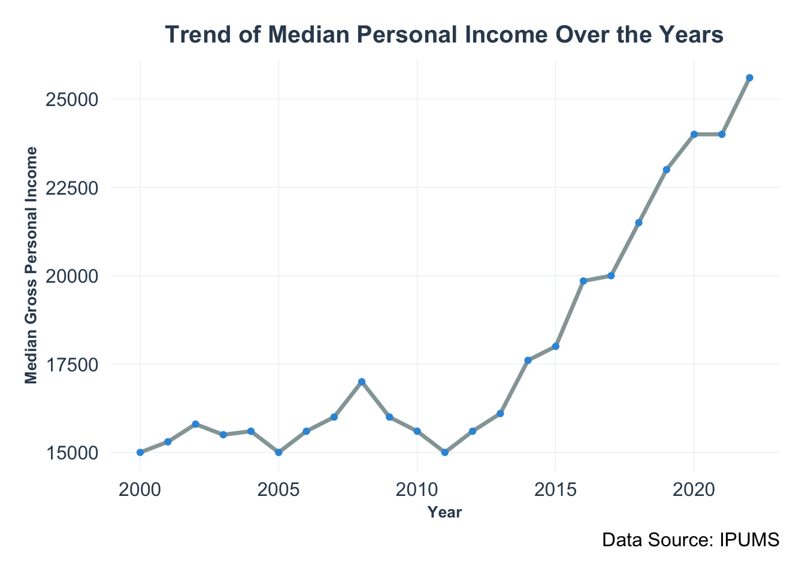
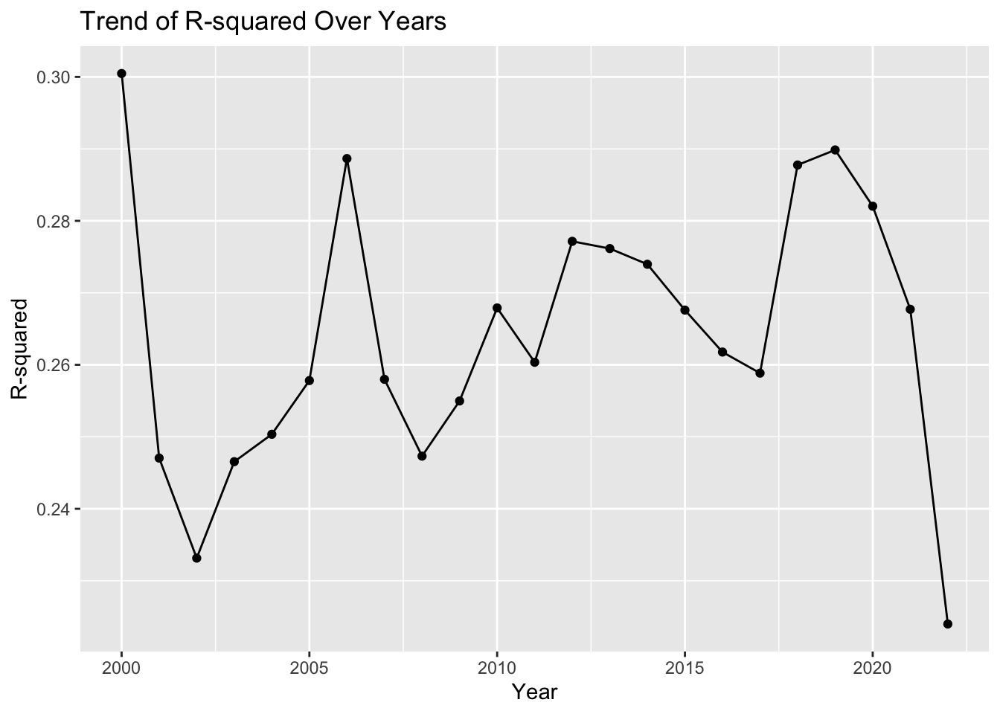

Merged dataset cleaning
Merging the dataset from 2000 to 2022, to get a further insight on the trend of the rent in these twenty years.
Previously, we investigate the relationship between rent spending and income.
Visualize the pattern in 22 yrs
Rent trend
- The chart displays the trend of median gross rent from the early 2000s to the early 2020s, give a general view of the change on gross rent in 20 years.
- Median values are used to represent the data to mitigate the effects of large outliers on the analysis, as explored in class blog 3.
- There is a clear and steady increase in the median gross rent over the years, indicating a consistent rise in rental costs.
- No periods of decline or stagnation are visible, suggesting a persistent demand for housing or other market pressures driving up rent.
Income trend
- The plot shows a rising trend in median personal income from 2000 to 2020.
- Income levels appear to remain relatively stable in the early 2000s, with minimal fluctuation.
- Around 2010, there is a noticeable dip, which could correspond to the after-effects of the 2008 financial crisis.
- Following the dip, there is a strong upward trend, with income levels significantly rising, especially post-2015.
- The steepest increase in median income occurs in the last few years of the data, suggesting a recent boost in personal income levels.
Group by YEAR, fit same log-log model like 2022 in class blog 4
| YEAR | r.squared | adj.r.squared | sigma | statistic | p.value | df | logLik | AIC | BIC | deviance | df.residual | nobs |
|---|---|---|---|---|---|---|---|---|---|---|---|---|
| 2000 | 0.3004684 | 0.2734731 | 0.4224935 | 11.13038 | 0 | 23 | -333.323 | 716.6461 | 827.3891 | 106.3864 | 596 | 620 |
| 2001 | 0.2470440 | 0.2375703 | 0.4343406 | 26.07673 | 0 | 23 | -1071.364 | 2192.7289 | 2330.8294 | 344.8555 | 1828 | 1852 |
| 2002 | 0.2331442 | 0.2219811 | 0.4474190 | 20.88527 | 0 | 23 | -973.854 | 1997.7081 | 2132.2145 | 316.2903 | 1580 | 1604 |
| 2003 | 0.2465441 | 0.2370067 | 0.4480918 | 25.85020 | 0 | 23 | -1122.311 | 2294.6224 | 2432.5740 | 364.8287 | 1817 | 1841 |
| 2004 | 0.2503521 | 0.2402157 | 0.4474393 | 24.69849 | 0 | 23 | -1048.315 | 2146.6299 | 2282.9544 | 340.5435 | 1701 | 1725 |
| 2005 | 0.2578132 | 0.2537284 | 0.4519094 | 63.11557 | 0 | 23 | -2613.433 | 5276.8654 | 5435.4542 | 853.4443 | 4179 | 4203 |
| 2006 | 0.2886511 | 0.2846915 | 0.4463248 | 72.89924 | 0 | 23 | -2532.394 | 5114.7885 | 5273.0962 | 823.1186 | 4132 | 4156 |
| 2007 | 0.2579863 | 0.2539132 | 0.4657137 | 63.33896 | 0 | 23 | -2747.100 | 5544.2009 | 5702.8551 | 908.7660 | 4190 | 4214 |
| 2008 | 0.2473125 | 0.2433582 | 0.4633991 | 62.54309 | 0 | 23 | -2848.263 | 5746.5269 | 5906.2723 | 940.1263 | 4378 | 4402 |
| 2009 | 0.2549819 | 0.2512881 | 0.4705660 | 69.03019 | 0 | 23 | -3089.421 | 6228.8423 | 6390.0277 | 1027.2247 | 4639 | 4663 |
| 2010 | 0.2679043 | 0.2644022 | 0.4511145 | 76.49772 | 0 | 23 | -2997.845 | 6045.6891 | 6207.7645 | 978.4487 | 4808 | 4832 |
| 2011 | 0.2603548 | 0.2568985 | 0.4740125 | 75.32791 | 0 | 23 | -3313.745 | 6677.4909 | 6840.1493 | 1105.9138 | 4922 | 4946 |
| 2012 | 0.2771554 | 0.2739096 | 0.4600769 | 85.38670 | 0 | 23 | -3294.673 | 6639.3453 | 6802.9947 | 1084.1776 | 5122 | 5146 |
| 2013 | 0.2761514 | 0.2728593 | 0.4602770 | 83.88121 | 0 | 23 | -3255.114 | 6560.2281 | 6723.5597 | 1071.3503 | 5057 | 5081 |
| 2014 | 0.2739684 | 0.2708225 | 0.4612843 | 87.08596 | 0 | 23 | -3428.168 | 6906.3364 | 7070.8734 | 1129.4535 | 5308 | 5332 |
| 2015 | 0.2676026 | 0.2643909 | 0.4591722 | 83.32228 | 0 | 23 | -3363.339 | 6776.6777 | 6940.9176 | 1105.8510 | 5245 | 5269 |
| 2016 | 0.2617749 | 0.2585815 | 0.4688414 | 81.97435 | 0 | 23 | -3520.766 | 7091.5316 | 7256.1108 | 1168.7418 | 5317 | 5341 |
| 2017 | 0.2588462 | 0.2556947 | 0.4728262 | 82.13395 | 0 | 23 | -3627.601 | 7305.2017 | 7470.2079 | 1209.2611 | 5409 | 5433 |
| 2018 | 0.2877600 | 0.2847376 | 0.4738139 | 95.20847 | 0 | 23 | -3646.330 | 7342.6610 | 7507.7177 | 1216.7881 | 5420 | 5444 |
| 2019 | 0.2898507 | 0.2867566 | 0.4801230 | 93.68034 | 0 | 23 | -3621.724 | 7293.4472 | 7457.8479 | 1216.9048 | 5279 | 5303 |
| 2020 | 0.2820342 | 0.2778789 | 0.4948471 | 67.87314 | 0 | 23 | -2848.262 | 5746.5231 | 5903.8619 | 973.1280 | 3974 | 3998 |
| 2021 | 0.2677132 | 0.2643873 | 0.4841706 | 80.49233 | 0 | 23 | -3517.113 | 7084.2259 | 7247.5919 | 1187.1087 | 5064 | 5088 |
| 2022 | 0.2239915 | 0.2205238 | 0.5099087 | 64.59389 | 0 | 23 | -3842.513 | 7735.0255 | 7898.7961 | 1338.2554 | 5147 | 5171 |
The r.squared values across the years fluctuate but generally stay within a narrow range, suggesting a consistent level of variability in the response variable that is explained by the model.
The adj.r.squared values are consistently slightly lower than the r.squared values, which is expected as they adjust for the number of predictors in the model relative to the number of observations. But generally, both of these indicators are in a acceptable range.
The p.value column shows zeros across all years, indicating that the overall model is statistically significant each year.
The logLik (log-likelihood) values are negative and increase in magnitude over time, possibly indicating that the model’s fit is improving or that the variability in the data is increasing.
The AIC and BIC values also generally increase over time, which could suggest that the complexity of the model or the information loss is growing.
The deviance shows how much of the total variability is not explained by the model; the trends here are not immediately clear without further context.
The df.residual (degrees of freedom of residuals) decreases slightly over time, indicating that there might be more parameters in the model or less data available in later years.

The coefficient for log_INCTOT has fluctuated over the years, indicating varying degrees of association between INCTOT and the dependent variable in the model.
There are some years where the coefficient estimate peaks sharply, particularly noticeable in the early 2000s and again around 2020.
Conversely, there are troughs that follow these peaks, suggesting periods of less influence or a negative correction in the relationship.
The trend is not monotonic; it does not consistently increase or decrease but rather has multiple peaks and valleys.
The repeated rise and fall of the coefficient estimate could imply a cyclical pattern that repeats over several years.
The range of the coefficient estimates is relatively tight, with the lowest around 0.12 and the highest just above 0.14.

Like the previous plot for log_INCTOT coefficients, the R-squared values here also show variability over time with no clear or consistent trend.
The R-squared values represent the proportion of the variance for the dependent variable that’s explained by the independent variables in the model. The fluctuation suggests that the model’s explanatory power changes from year to year.
Notably, there’s a sharp drop in the R-squared value in the most recent year shown, which could indicate a sudden decrease in the model’s predictive power or a significant change in the underlying data structure for these years.